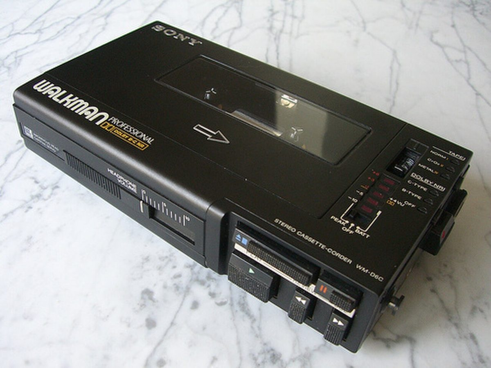

Nine cassettes from a Cape Town cellar
- who
- Nigel Wrench (recordist), Turnstyle News
- what
- ZA86, edited from nine cassettes
- when
- 1986
- where
- South Africa

In 1986 a 25-year-old radio reporter, Nigel Wrench, recorded South Africa in the most brutal years of late apartheid. His cassettes ended up in the archive of Turnstyle News, in a Cape Town cellar, and stayed there for decades.
Edited from nine of those tapes, ZA86 came out on the 25th anniversary of Mandela's release. Among the street sound and interviews is a Band Aid-style pop song released by the apartheid regime itself, the state trying to sing its own way out.